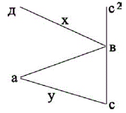
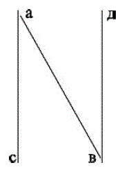

Беседа 884 от 3877 · Беинса Дуно
Силовите линии на доброто и злото
Размишление
Продължение на четенето на някои от работите върху темата Предаване в поетична форма на думите „Любов, светлина, свобода за човешката душа“.
Първоначално знанието е подразбирало преживяване на една нова форма от Божествения Дух. Обаче този първичен смисъл на знанието сега е изгубен и днес под думата знание ние подразбираме само външните отношения на нещата. Например ние знаем, че Месечината се върти около Земята, но това не е знание, а само познание. Сега знанието се замества с Истината. Днес хората са раздвоили думата Истина, но всъщност под Истина се подразбира същината на живота по форма, съдържание и смисъл. Истината подразбира еднакво зачитане на формата, съдържанието и смисъла на нещата. Ако някой човек каже на друг, че не дава пет пари за неговото тяло, той не разбира съдържанието на нещата. Ако каже, че не дава пет пари за неговото съдържание, той не разбира смисъла на нещата. Когато казваме, че формата на нещата не ни интересува, това е само философски израз. Питам: може ли да се прояви съдържанието на нещо в света без някаква форма? Това е невъзможно при сегашните условия. Може ли да се прояви смисълът на нещо без съдържанието му? Смисълът може да съществува вън от съдържанието и съдържанието може да съществува вън от формата, но те сами не могат да се проявят.
Следователно всяка форма, която привлича нашето съзнание и нашето внимание, колкото и микроскопическа да е, трябва да произведе радост в душата ни. Например разумният човек, като види един малък кристал, какъвто и да е той, колкото и нищожен да е, неговата форма веднага ще произведе в душата му малка радост. Защо? – Понеже във всяка форма се крие едно разумно същество, което работи в нея. Всички форми са създадени от разумни, гениални Същества, които живеят в Божествения свят. Но тези форми днес са изопачени, вследствие на което хората имат криви понятия за формата на нещата. В една от миналите лекции ви говорих, че формата трябва да отговаря на съдържанието, а съдържанието трябва да отговаря на смисъла. Така трябва да гледа на този въпрос ученикът, който изучава великата Божествена наука. От формата на нещата трябва да се съди за съдържанието.
Същото нещо се забелязва и във френологията. Например от формата на пръста можем да знаем за съдържанието, което се крие в главата. По показалеца и по средния пръст съдим за интелигентността на човека. Ръката, пръстите, както и цялото тяло на човека, са построени въз основа на ред математически съотношения. Според това, как се движи човешката интелигентност, така са построени и пръстите на ръката. Онези хора, които са философски настроени или които имат критически ум, т.е. обичат да ровят навсякъде, имат възли на пръстите си. Хора, които имат такива философски разположения, обичат да подпушват нещата. Те често подпушват известни течения, направят един бент, който наричат философия. Значи всяка философска система представлява един бент. След като се удавят в тази река десет, двадесет, сто, хиляда души, хората казват: „Този бент не е направен на място, друг трябва да направим.“ Създават друга теория – направят друг бент. Трябва да знаете обаче, че в Природата бентове не съществуват. В Природата трябва да има постоянни течения. Тия течения трябва да бъдат дълбоки. Ето защо философът не трябва да прави бентове, да подпушва теченията в Природата. Той трябва да бъде бистра, чиста река. Ако иска да бъде философ, трябва да тече постоянно. Вода, която постоянно тече, се обновява.
Често вие се подпушвате, казвате: „Защо Господ създаде доброто и злото в света?“ Щом кажете „Защо Господ създаде доброто и злото?“, вие се подпушвате и ставате философ. Казвате си: „Нали Господ е добър, всесилен, защо остави да съществуват доброто и злото едновременно?“ Вие не разсъждавате правилно.
За вас има зло, но вашето зло не е зло за Бога. За Бога зло не съществува. Ако някой човек открадне парите ви, това зло ли е за Бога? Питам ви: „Тия пари ваши ли са?“ – „Аз ги спечелих с пот на челото си.“ – „Ами вие отде взехте тази вода, която излиза от челото ви?“ – „Тази вода е взета назаем.“
Значи, след като сте работили известно време, излишната вода излиза от вас. След като си работил дълго време, Слънцето казва: „Ти имаш много вода.“
Слънцето изтегля водата на хората навън – то ви обира. После Слънцето казва: „Понеже аз взех водата ви, вместо нея ще ви дам друга. На еди-кое си място аз създадох нов извор. Понеже водата във вашия организъм се опорочи, ще я издигна и след като я пречистя, ще я върна отново във вид на хубав извор.“ Вие казвате: „Неприятно е човек да се поти.“ Човек може да се поти, а може и да не се поти. Болните хора не се потят, а здравите хора се потят. Ако не искаш да се потиш, болен ще бъдеш. Ако искаш да бъдеш здрав, ще се потиш. И сега, като ме питате защо е злото в света, ще ви кажа, че злото е потене. Като дойде злото, ще се изпотиш, а щом се изпотиш, ще оздравееш.
Следователно доброто и злото са отношения на две точки. Ако започнеш с доброто, ще свършиш със злото. Това е първото неизбежно положение в живота. То е слизане. Ако започнеш със злото, ще свършиш с доброто. Това е качване, възлизане нагоре. Да допуснем, че ти си юнак – силен, мощен човек. Отиваш някъде на гости, но не те приемат хубаво. Ти оставаш недоволен от това и набиваш хазяина на дома, като му казваш: „Защо не ме нагости добре?“ Това е злото, с което ти започна. Хазяинът те нагости добре, но ти не остана доволен. Ти очакваше този човек да ти заколи кокошка, да ти направи хубава баница, да купи вино, но понеже всичко това не го намери, ти остана недоволен и затова наби хазяина. Недоволството в тебе беше причина да се прояви злото. Няма да се мине много време, това зло ще се върне в твоя дом. Все ще се намери някой човек, по-голям юнак от тебе, който ще ти иска печена кокошка и хубава баница. Като те набият, ще си кажеш: „Не е добре да се бият хората. Човек трябва да бъде добър.“ Следователно в твоето съзнание ще се яви идеята: за предпочитане е човек да постъпва добре, отколкото зле. Тъй че доброто и злото са относителни величини в живота. Тъй както ние ги разбираме, те за нас представляват две абсолютно положителни величини. За вас обаче доброто не е абсолютна величина. Например вие казвате: „Човек не си струва да бъде добър.“ Какво значи да бъде човек добър? Ако е добър, той трябва да бъде добър при всички условия. Щом при известни условия съм добър, а при други съм зъл, аз не боравя с една реална, а с една относителна величина. По същия начин казваме: „Човек не трябва да бъде зъл.“ Значи и злото не е абсолютна величина, но относителна. Злото и доброто са две необходими положения. Следователно, за да се прояви добрият човек в света в своя творчески гений, злото непременно трябва да се явява в живота му като временен фактор.
Като окултни ученици вие не трябва да се спирате върху въпроса защо Господ създаде злото. Доброто и злото са две велики сили, които действат в света.


Тази вечер нямам свободно време да се занимавам с дълбоката математика на тия два неизвестни за вас живота. Животът в точка Y в дадения случай е създаден от един по-нисш живот, а животът X – от по-висш живот. Следователно съществата, които са създали добрия живот, имат по-малко енергия от онези същества, които създават повидимому лошия живот. След време лошият живот ще се превърне в добър и ще даде по-богата жътва. При сегашните условия ние сме излезли от А и сме достигнали до С, затова нашият живот е грешен. Питам ви: след това в каква посока ще се движите? – От С към С2. Тия чертежи за повечето от вас не са ясни. Малцина могат да ги разберат. Задачата ми не е да направя тия чертежи ясни за вас, но единствената ми задача е да ви обърна внимание на това, да не се спъвате в разрешението на въпроса що е добро и що е зло. Злото е единственото условие да покажете своето добро – нищо повече. Доброто пък е условие да превърнете енергиите на злото за служене на доброто. Доброто и злото са състояния. Всеки от вас може да има добро или лошо състояние. Доброто и злото са два различни метода, с които си служи окултната наука. За в бъдеще вие ще изучавате тия методи – да превръщате природните енергии от едно състояние в друго. Туй трябва да знаете.
Вие казвате: „Този човек е лош.“ Спрете ли се върху това, вие се подпушвате. Вие не знаете кой човек е добър и кой – лош. Ако в даден момент аз съм добър към вас, следния момент няма да бъда тъй добър. Ако в даден момент съм лош към вас, следния момент няма да бъда лош, добър ще бъда. Тия положения се сменят. За да ви изясня тази идея, трябва да ви представя следната картина. Допуснете сега, че в едно общество има кръчми. Казвам: добро нещо е, когато в някое общество има кръчми. Какво подразбираме, когато казваме, че кръчмите са необходими? Представете си, че една от тези кръчми се намира на някой друм, дето минават много пътници. Тук кръчмарят е необходим, защото през този друм минават много разбойници, които ще се спрат, ще се напият и няма да избиват хората, няма да вършат зло. И тъй, кръчмите обуздават злото. Те не са за добрите хора, но за злите. Ако кажем, че в едно общество не трябва да има кръчми, подразбираме, че в туй общество няма разбойници, следователно няма кой да убива хората. Ако хората са добри, трябва ли да има кръчми? Ако хората са добри, кръчми не трябва да има; ако хората са лоши, кръчми трябва да има. Тъй щото при съществуване на разбойници кръчмарят е отличен човек. Защо? – Той спасява добрите хора, които пътуват по този път. При едно добро общество този кръчмар ще направи зло, понеже добрият човек ще се спре в кръчмата, ще се напие и няма да свърши работата си. Тъй щото кръчмите са направени за лошите хора. Само лошите хора трябва да влизат в кръчма. Добрият човек трябва да върви свободно по пътя си, понеже кръчмарят задържа разбойниците. Той казва на добрите хора: „Вие си вървете свободно по пътя. Ние ще пуснем разбойниците, когато се отдалечите от тях. И те, като няма кого да убиват, ще се върнат по домовете си.“ Какво трябва да се подразбира, когато добрите хора започнат да влизат в кръчми? – Че кръчмите трябва да се превърнат в гостилници.
Следователно виното трябва да преобладава между лошите хора. Затова именно днес има толкова много вино в света. Знаете ли какво би станало в света без вино и без ракия? Виното е зло, но вие не виждате добрата му страна. Не е въпросът да направите хората въздържатели, но най-първо ще ги направите добри. Ако е въпрос за въздържание, то трябва да се постави на положителна основа. Окултната наука твърди, че лозата е емблема на човешкия живот, и понеже човекът ферментира, и лозата ферментира. Човек ферментира по причина на своя грях. Ако човек беше праведен, той щеше да бъде сладък, вследствие на което и гроздовият сок нямаше да ферментира. Значи човекът е причина за ферментиране на гроздовия сок. Сега ние искаме изкуствено да задържим сладостта на гроздовия сок. Виното не може да остане сладко. Захарта в него се превръща в спирт, който упоява хората. Хората имат неестествени желания, които не са съгласни с Божията воля. Докато има вино в света, ще знаем, че човешкият живот трябва още много да се пречиства. Не трябва да се сърдите на кръчмаря. Ако трябва да се сърдите някому, това сте вие – на себе си трябва да се сърдите. Ако имате един лош приятел, кой метод ще приложите към него? – Метода на кръчмаря. Ако имате един добър приятел, към него ще приложите метода на гостилничаря. Вие ще кажете: „Не може ли да се постъпи по друг начин?“ При сегашните условия не може да се постъпи по друг начин. Тъй както сега се развива животът, възможности има много, но за да се приложи Доброто в живота идейно, от вас се изисква знание, за да се борите с всички атавистични черти, вложени във вашия характер. Често казвате: „Защо е злото в света?“ Казвам: щом си такъв философ, че разискваш по този въпрос, запази хладнокръвие при всички условия на живота.
Досега аз съм срещнал само един българин, който при един случай показа по-голямо хладнокръвие и от англичанина. Той беше лекар, сега заминал за другия свят. Това, което ми обърна вниманието, беше следното: един ден той отвори да чете някаква книга „Философия на медицината“, но двете му деца се качиха на гърба му, на главата му, дърпаха го за брадата, мачкаха шапката му. Обаче той продължи да чете, не им обръщаше внимание и си каза: „Вие, деца, ще поумнеете един ден, но като дойдете на моите години.“ Това е дисциплина на ума. Той си чете, като че нищо не става наоколо му. Питам: кой от вас би изтърпял това? Туй е действителен факт. Децата му го закачаха цял час, след това се отдалечиха от него, а той си чете, вдълбочен в своята книга. Такъв трябва да бъде християнинът! Ако две злини се качат на гърба ти, остани прав, обърни се наляво и надясно, без да има обръщаш внимание. Това е едно прекрасно състояние на човешкия дух.
Ако вие, учениците, имате хладнокръвието на този български лекар, знаете ли какво нещо щеше да излезе от вас? Вие казвате: „Този човек се е родил така, той има тази черта от миналото съществуване.“ – Да, така е роден, но той е работил върху себе си. Тази черта на разумното търпение трябва да се изработи, тя не се създава в един ден.
И тъй, казвам ви: не се спирайте върху мисълта защо Господ създаде злото в света. Вие не знаете дали Господ създаде злото. Задавайте си само въпроса какво можете да научите от злото и какво – от доброто? Ако ви дам да опишете в поетична форма злото и доброто, как бихте ги описали? За следният път ще бъдете тъй добри, неколцина от вас, които могат да пишат поезия, да изразят в три куплета най-много, във форма на диалог, един разговор между доброто и злото. Злото е непроявената любов. Всяко нещо, което не е проявено, е зло. След като се прояви това нещо, става добро. Това е вярно. И в Природата, за да се прояви нещо, винаги се изисква едно топло и едно студено течение. Студеното течение обикновено уморява човека, а топлото му дава живот. Студът до известно число градуси причинява смърт, а после и той дава живот. В съвременната наука се казва, че най-ниската температура е 273° под нулата, при която температура светът се разрушава. Студът, като премине още по-долу от 273°, той се превръща в топлина. Това е едно възражение на учените хора. Те са прави, като казват, че светът ще се разруши под температура (- 273°), защото студът вече се превръща в топлина. Значи в студа има скрита топлина. Казваме, че топлината дава живот. Така е, но ако топлината се повиши над 100°, над 500° и повече, и тя причинява смърт. Както виждате, положенията се изменят.
Казвам: всяко нещо, което не е проявено в Природата, ние наричаме зло. Например един човек може да има най-добрите намерения, но най-първо той трябва да направи едно зло, за да прояви своето добро. Казвате: „Светът не е направен добре.“ Питам: по кой начин трябваше Господ да се прояви в този свят? Дайте вие един по-добър план. Светът е проявление на Бога. Щом сте недоволни от него, вие създайте по-добър свят от този. Дайте вашия план как трябва да се създаде светът. Вие не трябва да бъдете от онези глупави философи, които казват, че светът е лош. Когато някой човек казва, че светът е лош, подразбирам, че този човек не знае смисъла на нещата, не знае как да мисли. Често пред някой богат човек слагат вкусно ядене, но той го намира безсолно. Защо? – Той е ял пищна, богата храна, и вследствие на това мъчно се задоволява. Но ако този човек е прекарал в беднотия, гладувал е по четири-пет дена, вижте дали ще бъде недоволен от яденето. Дайте му една постна картофена чорбица и малко черен хляб, ще видите как ще яде и ще благодари. Това са две положения в живота.
Следователно всеки недоволен човек е аристократ, който е изгубил смисъла в живота. Такова нещо представляват всички съвременни хора. Господ, Който е толкова мъдър, ще извади хората от техния аристократизъм. Как? – Ще ги направи бедни. След това ще им даде от тази картофена чорбица, за която като богати казваха, че нищо не струва, но като бедни ще намерят, че е отлична. По този начин Бог ще измени вашите състояние, вашите мисли, вашите чувства, за да бъдете благодарни от малкото, което ви се дава в света. Сега хората искат много, вследствие на което съществува злото. Някои хора четат съчиненията на много философи, но каква полза от това? Не казвам, че не трябва да четат философите, но питам: придобиха ли доволство в живота?
Намериха ли смисъла на доброто и злото? Първото, което ще ви направи впечатление в техните съчинения, е, че тия философи едни други се опровергават.
Да опровергаваш неща, да ги тълкуваш – това не е философия, това е хирургия.
Преди няколко дни аз ви приведох един пример за вълната и казах: не е достатъчно само да се изпере вълната, но след това трябва да се изпреде. След като се изпреде, трябва да се изтъче. След като се изтъче, трябва да си направиш от нея една хубава вълнена дреха, която грижливо да пазиш от молците. Ако след като си употребил толкова труд, дойдат молци и изядат дрехата ти, колко струва този голям труд? Ето защо вие трябва да преценявате труда си, добре да пазите своята вълнена дреха от молци.
Какво представляват молците в нашия живот? Молците, това са пороците в живота ни. Кои са най-обикновените пороци?
Отговор: Съмнение, завист, подозрение.
Напишете колко духовни пороци има в човека. Най-големият порок на ума е безверието. В ума има много пороци, но безверието изсушава ума: пресъхва течението на всички хубави, красиви мисли в него. Или, казано с други думи: тъмнината в съзнанието разрушава човека. Тя произтича от безверието, затова и нея смятат за един от молците. Кой е най-големият молец за сърцето?
Отговор: Омразата.
Омразата е в състояние да развали най-хубавите и красиви чувства, изработени с хиляди години. Тя прави дупки на красивата дреха на сърцето. С какъв нафталин трябва да посипете тази дреха, за да се запази от молци? – Най-добрият нафталин, който може да запази дрехата на сърцето от молци, е Любовта.
В духовния свят не се позволява да туряш дрехата си в гардероб. Винаги ще носиш своята дреха със себе си. Питам: ако постоянно носиш своята дреха на гърба си, молците ще я ядат ли? Според този закон, ако вашата дреха е изядена от молци, подразбирам, че не сте я носили постоянно на гърба си, а сте спали и сте се излежавали. Онзи, който постоянно носи дрехата на гърба си, е работлив, смел човек, той ходи навсякъде с дрехата си. Разбирате ли тази философия? Ето защо вие трябва да имате една дреха, която постоянно ще носите на себе си. Щом носите тази дреха, тя ще се пречиства в духовния свят, тъй както се чистят дрехите на птиците. Птиците са изучавали това изкуство – цветовете на перцата им не се развалят, а цветовете на нашите дрехи от много носене се развалят и избеляват.
Като казвам, че злото и доброто съществуват в света като относителни величини, искам да ви обърна внимание на това: да не допущате злото в мисълта си, нито в чувствата си, за да не се подпушвате. Когато видите, че един човек греши, не трябва да вадите крайни заключения, че този човек е лош. Когато кажем, че 2+4=6, какво подразбираме? Числото 6 е резултат. Числото 2 е земята, богатата почва. Числото 4 са семенцата, посети в тази почва. Резултатът пък, т.е. числото 6, може да бъде жито, царевица, плодове, зеленчуци и т.н. Следователно, като вадите крайни резултати, че този човек е лош, вие все едно че правите събиране, казвате: „2+4=6.“ Не правете преждевременно своите заключения! Защо? Ако минавате във време на дъжд покрай някое място, на което почвата е чернозем, какво ще кажете? Лошо място е това, мочурляк, не се минава през него. Питайте земеделеца какво ще каже той за тази почва.
Ако сее жито на тази почва, той ще каже: „Отлична е тази пръст!“ В сухо време тази почва се обръща на прах, става на буци и вие казвате: „Да не ми дава Господ да минавам по тези места!“ Земеделецът има друго мнение за тази почва и казва: „Дай, Боже, да имам жито да посадя в тази почва!“ Това са две различни положения в живота, които вие трябва да разбирате. Добрите положения и лошите положения са само условия в живота, които разумният човек разбира, а глупавият не разбира и казва: „Това е добро, онова е лошо.“ Вие, без да мислите много, казвате: „2+4=6.“ Какво означава това? – Два гроша и четири гроша правят шест гроша. Това и кокошката знае. И кокошките събират по този начин: две зрънца и четири зрънца правят шест зрънца. Чудни сте вие, като мислите, че само хората знаят да събират. И котките знаят да събират. Всички животни знаят да събират, при това те събират отлично. При събирането обаче вие трябва да дойдете до положението да разбирате резултатите на това действие..
И тъй, като ученици не се подпушвайте с вашата философия. Не си отговаряйте на въпросите защо съществува злото, защо еди-кой си мисли така, защо еди-кой си постъпва така, и т.н. При всеки случай в живота ви, когато вие разрешавате някоя трудна задача, не се спирайте върху грешките на хората. Вие си представете, че сте извън доброто и злото и че можете да разрешите вашата трудна задача.
Сега ще ви дам следната задача за една седмица. Като ставате сутрин, ще кажете в ума си: „Заради Любовта, с която Бог ме е облякъл, всичко, което ми се случи през деня, ще го приемам, че е хармонично създадено.“ Всичко, каквото ви се случи през деня, ще мислите, че е за добро. Каквото и да ви се случи, каквото и да ви кажат – добро или зло – ще знаете, че всичко е за добро, няма да се съмнявате в нищо. През тия седем дена ще мислите, че всичко става за добро. И доброто, и злото са служители на Любовта. Злото служи на Любовта, и доброто служи на Любовта. Като ви се случи нещо, ще кажете: „Благодаря Ти, Господи, че си ме удостоил с Твоята Любов!“ Някой може да бръкне в джоба ти и да те обере, някой може да ти каже обидна дума – нищо от това. За всичко, което ти се случи, ще кажеш: „Благодаря Ти, Господи, че си ме удостоил с Твоята Любов. Както и да ми говориш, аз Те познавам!“ Вие видяхте например какви бяха гърмежите на Мусала. В тях имаше особена мекота. И светлината беше мека. Значи както и да говори Бог, тихо или бурно, в гласа Му винаги има мекота.
Аз зная, че всички ще бъдете радостни през тази седмица. Обиди няма да има вече. От тази вечер до другата сряда ще живеете в Царството Божие. Всеки трябва да намери най-хубавите думи, които може да каже. Когато дойде някой при вас, вие ще бъдете много внимателни към него. Речникът ви ще бъде много подбран. Всеки от вас, който направи една погрешка през някой ден от тази седмица, ще повтори упражнението за още една седмица. Ако през втората седмица направи друга погрешка, ще го потрети и т.н. Трябва да работите! Например някой от вас говори високо. Казвате: „Защо този брат говори така високо?“ Не, кажете си: „Този брат говори отлично.“ Значи за цяла седмица вие трябва да бъдете внимателни едни към други. Също тъй ще бъдете внимателни и с външните хора. Съзнанието ви трябва да бъде будно за цяла седмица, за да видите докъде сте достигнали във вашето развитие и на какво сте способни. Това е една малка маневра.
Сега можете ли да изпеете следното упражнение:
Кажи ми ти, светли Божий лъч,
благото на живота –
светлия прав път на чистите души,
измити във водите на Любовта!
Понякога вие се срамувате да пеете за Любовта, а търсите Любовта. Вие трябва да заучите това упражнение добре и да пеете като певци. Представете си, че вие сте осъдени на смърт и съдията пише на вашата присъда следното: „Ако можете да изпеете тази песен хубаво, с чувство, ще възвърнем живота ви – смъртната присъда ще се отмени.“ Как ще я пеете? – Ще пеете, а гласът ви ще трепери. Вие ще се молите и ще пеете. Всеки човек, който пее, трябва да знае, че решава един много важен въпрос. В пеенето помага и цигулката. Тя не се влияе от хората. Човек може да се повлияе, но цигулката не се влияе. В цигулката има установено мнение за нещата, характер има тя.
Изпейте упражненията Вдъхновение и Вехади.
Доброта, Истина, красота – това е Любовта.
Тридесет и втора лекция на ООК ІV година
15 юли 1925 г.
Абсолютна справедливост (Общъ окултенъ класъ. IV година (1924–1925). София, 2002)
36 беседи от 15 октомври 1924 г. до 12 август 1925 г.
Начало: 19:00